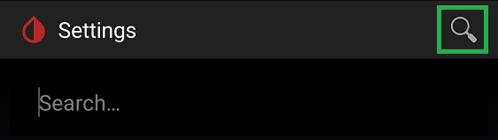

Settings

Settings
There are many settings in xDrip+, if you can't find what you're looking for, use the search lens top right and enter the keyword you're looking for.

Glucose Units⌁
Glucose Units
 mg/dl or mmol/l high and low
mg/dl or mmol/l high and low
In this menu you can select the units used by xDrip+ (mg/dl or mmol/l) and set high and low targets.
Glucose Units
mg/dl or mmol/l
These two targets will decide when the graph BG dots change color above or below target.
High Value
180
Low Value
70
Alarms and Alerts⌁
Alarms and Alerts
 Glucose, calibration and other alerts
Glucose, calibration and other alerts
Hardware Data Source⌁
These settings depend on the data source selected.
Hardware Data Source
NFC Scan Features⌁
This menu is only visible if you choose a Libre Bluetooth data source in the Hardware Data Source. If you need to access it to change smoothing parameters for Libre sensors, temporarily modify the data source.
NFC Scan Features
 Options for scanning NFC based sensors with the phone handset
Options for scanning NFC based sensors with the phone handset
Auto Configure⌁
Auto configure will help you copy settings between two xDrip+ apps installed on different phones.
Auto Configure
 Autoconfigure using a barcode
Autoconfigure using a barcode
Cloud Upload⌁
Cloud upload is used to configure various sharing and data upload features.
Cloud Upload
 Options for Nightscout, MongoDB or Dexcom Share uploading
Options for Nightscout, MongoDB or Dexcom Share uploading
Glucose Meters⌁
You can connect compatible glucose meters to xDrip+.
Glucose Meters
 Options for wireless glucose meters
Options for wireless glucose meters
Smart Watch Features⌁
Various smartwatch can receive data and display them from xDrip+, some can even act as a standalone collector.
Smart Watch Features
 Options for different watches
Options for different watches
Speak Readings⌁
xDrip+ can use the phone to speak values and alerts.
Speak Readings
 If the phone has text-to-speech capabilities it will speak each new reading
If the phone has text-to-speech capabilities it will speak each new reading
Inter-app Settings⌁
xDrip+ can accept or send data to other apps, and act as a local web server.
Inter-app Settings
 For interacting with other compatible apps
For interacting with other compatible apps
Less Common Settings⌁
More settings are available in this menu.
Less Common Settings
Debug and other misc. options
xDrip+ Display Settings⌁
xDrip+ Display Settings
 Display customizations
Display customizations
xDrip+ Predictive Simulation Settings⌁
xDrip+ Predictive Simulation Settings
Insulin, carb ratios, etc. for models
xDrip+ Sync Settings⌁
xDrip+ Sync Settings
 Settings for syncing between handsets
Settings for syncing between handsets
xDrip+ Motion Tracking⌁
xDrip+ Motion Tracking
 Movement detection and vehicle mode
Movement detection and vehicle mode
xDrip+ Update Settings⌁
xDrip+ Update Settings
 Automatic updates, crash report and feedback to developer
Automatic updates, crash report and feedback to developer
Show Settings QR Code⌁
This feature is used to transfer settings between phones.
Show Settings QR Code

Load / Save Settings⌁
You can backup and retrieve your xDrip+ settings.
Load / Save Settings

Insulin Pens⌁
Some insulin pens can be used with xDrip+.
Insulin Pens